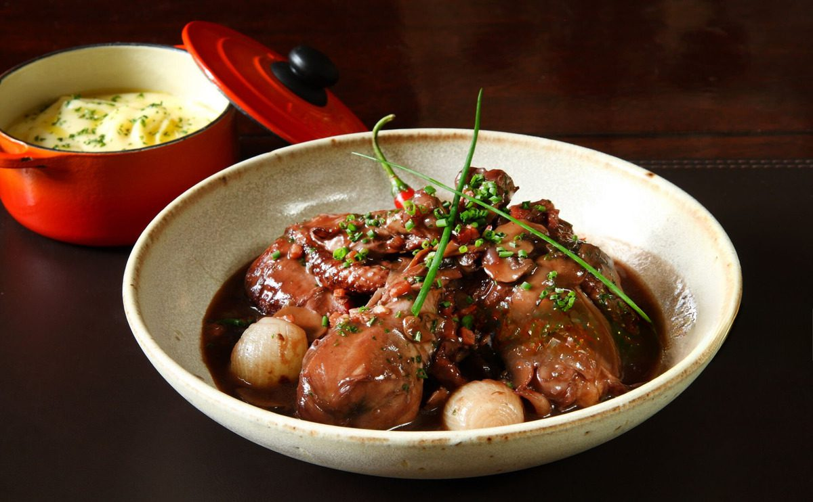

Gastronomia Francesa
A rica gastronomia francesa, reconhecida mundialmente, reflete a tradição, criatividade e sabor. Este verdadeiro patrimônio cultural é composto por uma variedade de pratos que vão desde o famoso Coq au Vin até a sofisticada Bouillabaisse. Cada receita é uma história que conecta a França à sua identidade, e as refeições são experiências sociais repletas de alegria.
